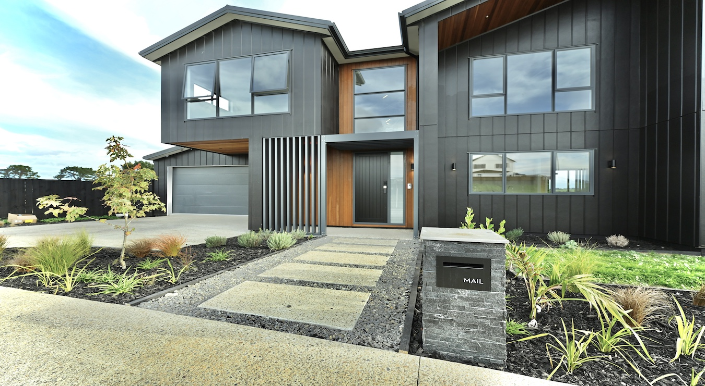
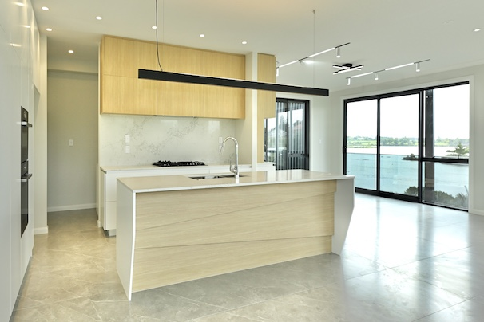

MJ Living · Homes for sale
Homes that feel considered before buyers step inside.
A more editorial, buyer-friendly landing page for renovated and newly developed homes, designed to build confidence before the viewing.
Buyer confidence
Lead with the feeling of home, then back it with detail.
Home buyers respond to atmosphere, layout, quality cues and certainty. This page gives MJ Living a warmer and more premium route into the property journey.
The design uses actual MJ Living imagery, direct calls to view homes, and plain-language sections that can support listings, renovation stories and suburb-level landing pages later.


What sells
Turn property interest into viewing intent.
Renovation clarity
Explain what has been improved and why it matters for everyday living.
Location context
Show the neighbourhood, commute, amenities and lifestyle in clean short sections.
Viewing momentum
Make enquiry and viewing actions visible across the page, especially on mobile.

Modern living
A page that feels less like a listing directory and more like the beginning of a move.
Page flow
Buyers need the right proof in the right order.
See the lifestyle
Hero image, value statement and location cues create immediate interest.
Understand the home
Summarise renovation, layout, comfort and practical details without clutter.
Book the next step
Route directly to live listings or a viewing enquiry.
Next step
Ready to view homes?
Route property buyers straight to MJ Living while keeping group enquiries available.